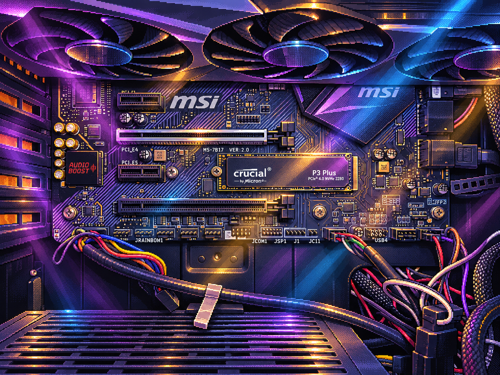
MACHINE MEMORY
A personal computing timeline, circa 1990–2026.
From the Amiga 500 to the Battlestation. Four decades of computers, operating systems, upgrades, experiments, and machines that came and went.
Some computers were carefully chosen. Others were built from scratch, bought second-hand, rescued from retirement, or simply passed down. A few became daily companions for years. Others had a surprisingly short life.
What follows is not a complete inventory of every machine I've ever touched. It's a personal history of computing — and of how the technology around me changed along the way.
The dates aren't always exact. The memories, however, have a way of sticking around.
01 — THE EARLY YEARS
EARLY 1990s
Commodore Amiga 500
1 MB RAM · AmigaOS
Where it all began.
The Amiga 500 was my entry into home computing: a machine from a time when computers still felt like something entirely different from ordinary household electronics.
One megabyte of memory. A floppy drive. And an entire world waiting to be explored.
Looking back, it was the beginning of a relationship with computers that would eventually go far beyond any particular machine or operating system.
Games I remember from that time: Kick Off 2, The Secret Of Monkey Island, Monkey Island 2: LeChuck's Revenge, Leisure Suit Larry III.
c. 1993
The 386
33 MHz · MS-DOS 5.0 / 6.22 · Windows 3.1
The transition from the Amiga to the IBM-compatible PC.
My 386 arrived with MS-DOS 5.0, was later upgraded to DOS 6.22, and introduced me to Windows 3.1.
Computing was still wonderfully hands-on. DOS commands, configuration files, and an operating system that didn't try particularly hard to hide what was happening underneath. Fighting for free RAM to run certain games was a recurring theme, so I wrote a branching AUTOEXEC.BAT.
But more importantly, I got confident about the interior of such machines. When the first CD-ROM drives came out, it was me to put it in. As well as the first CD writer: Fabulous 4x writing speed connected over an SCSI card.
Windows 95 followed not long afterwards, marking the beginning of a very different era of personal computing.
Games I remember from that time: Day Of The Tentacle, Anstoss 1, and so many adventures.
1998
The Vobis Pentium II
Intel Pentium II · Windows 98 · ISDN
The computer that took me properly online.
Unlike my later desktop PCs, this one was a complete system from Vobis. It ran Windows 98 and accompanied me into what felt like a genuinely digital age.
MP3 files changed the way I discovered and collected music. Over the following years came Napster, eDonkey, mailing lists, discussion forums, and the early communities that made the internet feel like a place rather than a service.
My connection was ISDN, with access through a phone and internet provider calles "isis" (which did dissolve into Vodafone eventually) and the University of Düsseldorf.
There were no social media feeds in the modern sense. Instead, there were websites to discover, conversations to join, files to find, and entire evenings disappearing into the network.
In many ways, this was the machine that connected my interest in computers with my interest in digital culture. I remember using this machine to write with the SISTERS community to trade live recordings, and eventually writing first HTML for my first webpage at germany.net. I registered www.never-land.de shortly after with 1&1.
Games I remember from that time: several early FIFA editions, Anstoß 2 and 3, several adventures by Sierra and LucasArts, and most likely many more.
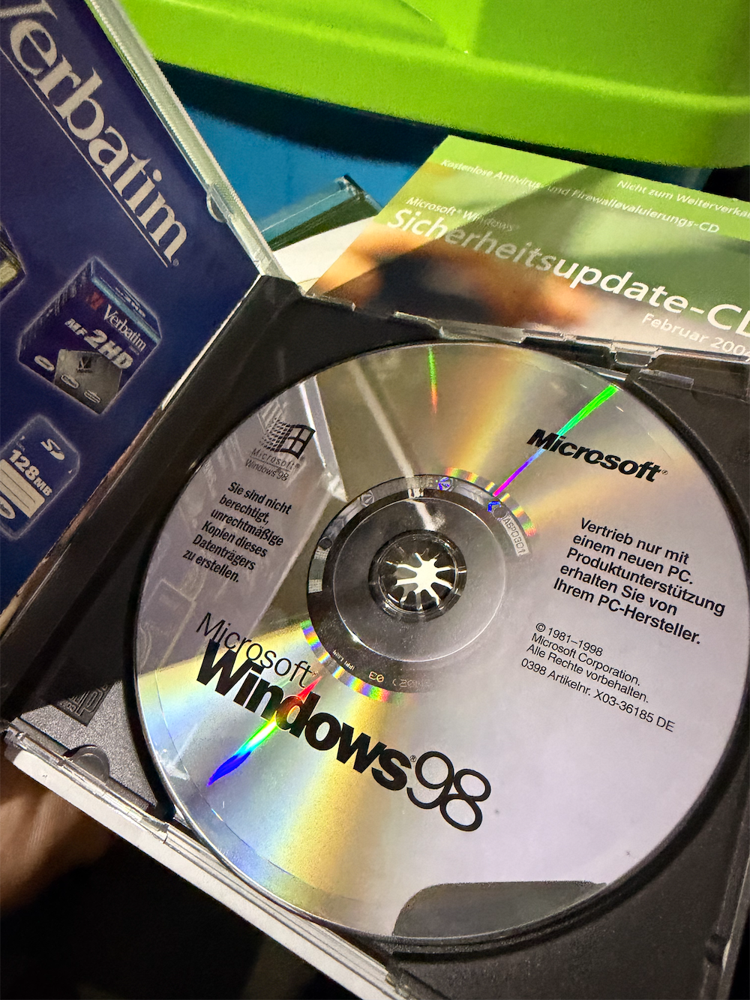
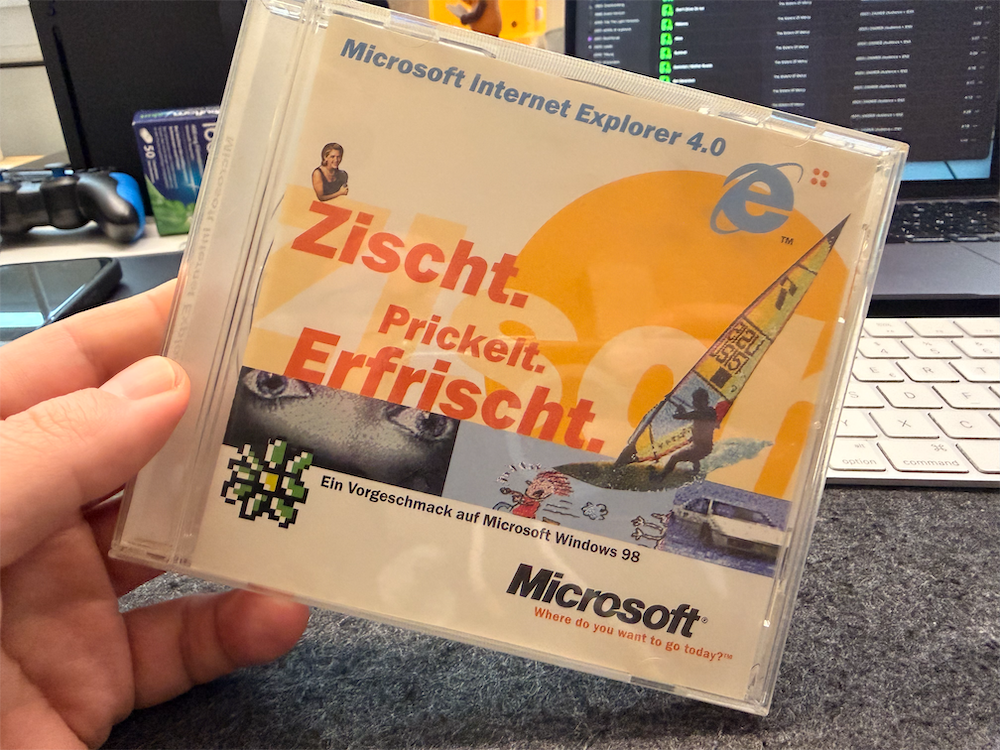
02 — THE DIY PC YEARS
c. 2002–2004
AMD Athlon XP 2400+
AMD Athlon XP · Windows XP · Custom-built PC
My first clearly remembered self-built PC.
After the Vobis machine, I moved away from buying complete systems and towards assembling my own hardware.
The Athlon XP 2400+ ran Windows XP, which represented an enormous step forward in the everyday PC experience.
Building a computer was different from owning one. Components could be replaced individually. The machine could evolve without everything having to be thrown away.
That philosophy would stay with me for years.
Games I remember from that time: Half-Life 2, Unreal Tournament, Gabriel Knight 2, and most likely many more.
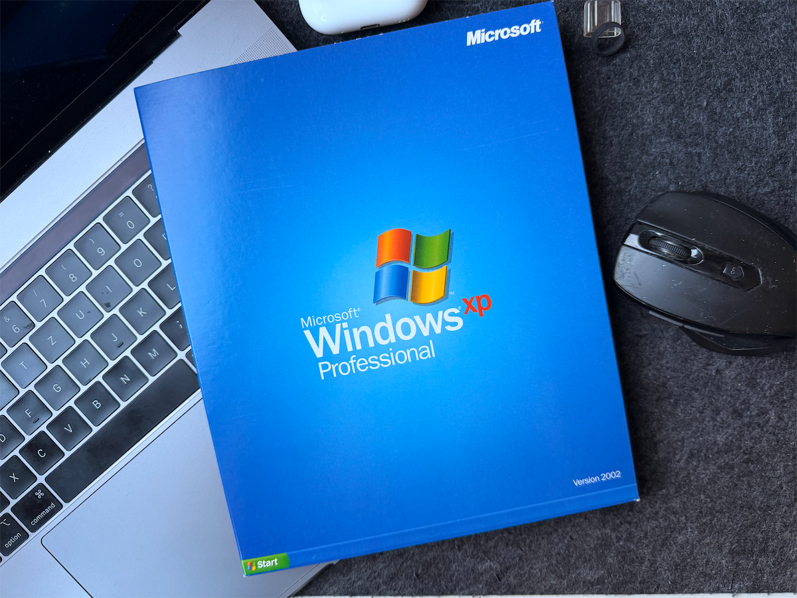
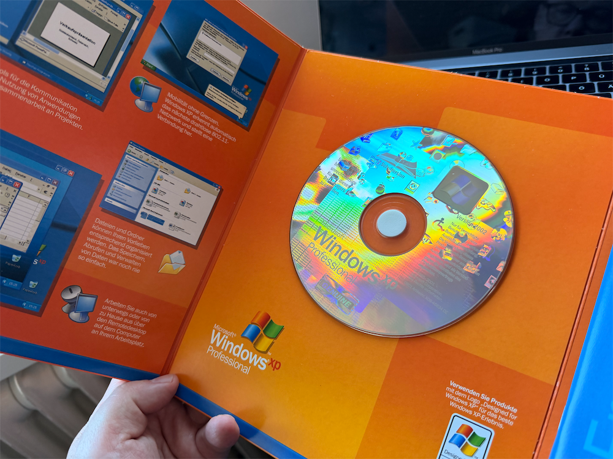
c. 2003–2004
ATI Radeon 9600 XT
AGP 8x · 128 MB · The Half-Life 2 coupon
Not a computer, but a component that deserves its own place in the timeline.
I'm fairly certain that my Athlon system eventually housed an ATI Radeon 9600 XT.
And I remember exactly why the card mattered: it came with a coupon for Half-Life 2.
A graphics card purchase that also promised access to one of the most anticipated PC games of its generation. The game itself wouldn't arrive until November 2004.
Somewhere in those years, I also remember owning an older ATI Rage 128 Pro. Which machine it belonged to, and when exactly it was replaced, is less clear.
c. 2007
Intel Core 2 Duo
ASRock 4CoreDual-VSTA · Windows Vista · Chieftec Dragon CS-601
A new processor, a new motherboard, and another generation of Windows.
The heart of this machine was an ASRock 4CoreDual-VSTA — a wonderfully peculiar transitional motherboard that supported both older and newer technologies, including AGP and PCI Express graphics cards.
The system lived inside a Chieftec Dragon CS-601, a dark-grey steel tower with a curved front door and distinctive horizontal ventilation grilles. It was exactly the kind of case that defined the self-built PC era for me: solid, practical, slightly imposing, and built to last.
Years later, I came across photographs of the very same case design on Reddit and recognised it immediately.
Exactly which graphics card I used with it has escaped my memory.
Unfortunately, the machine itself didn't survive. I either disposed of it myself or it disappeared during a family clear-out.
I rather wish I'd kept it.
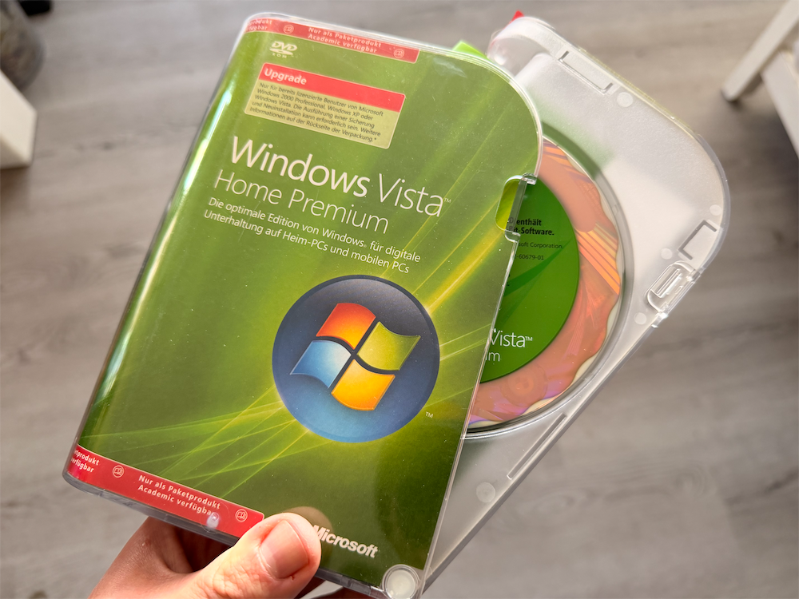
03 — THE APPLE TRANSITION
c. 2005
Apple iMac G3
PowerPC G3 · The first Mac in my collection
My relationship with Apple computers began before I actually switched platforms.
Around 2005, I received an iMac G3 from a university internship.
It wasn't a replacement for my Windows PC. It was another computer to explore — a completely different hardware and software ecosystem, with its own ideas about how personal computing should work.
The iMac introduced another strand into my computing history, one that would become increasingly important over the following years.
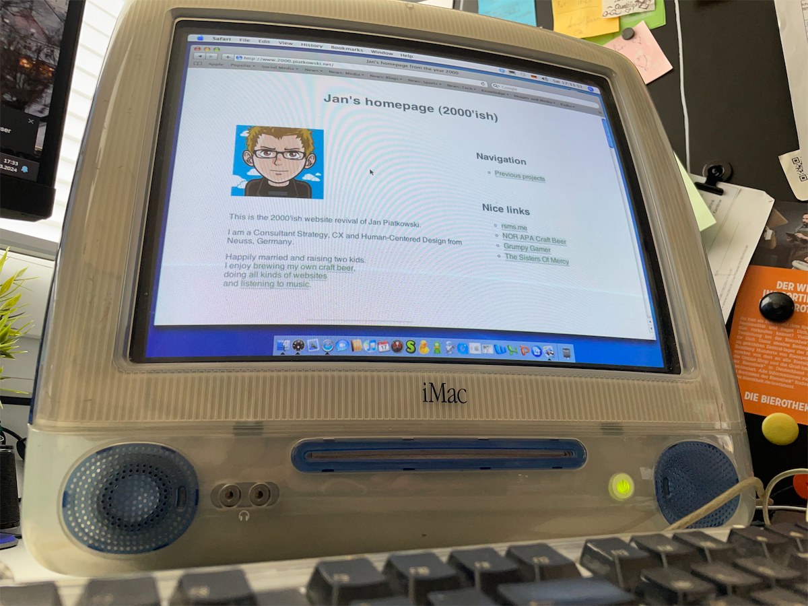
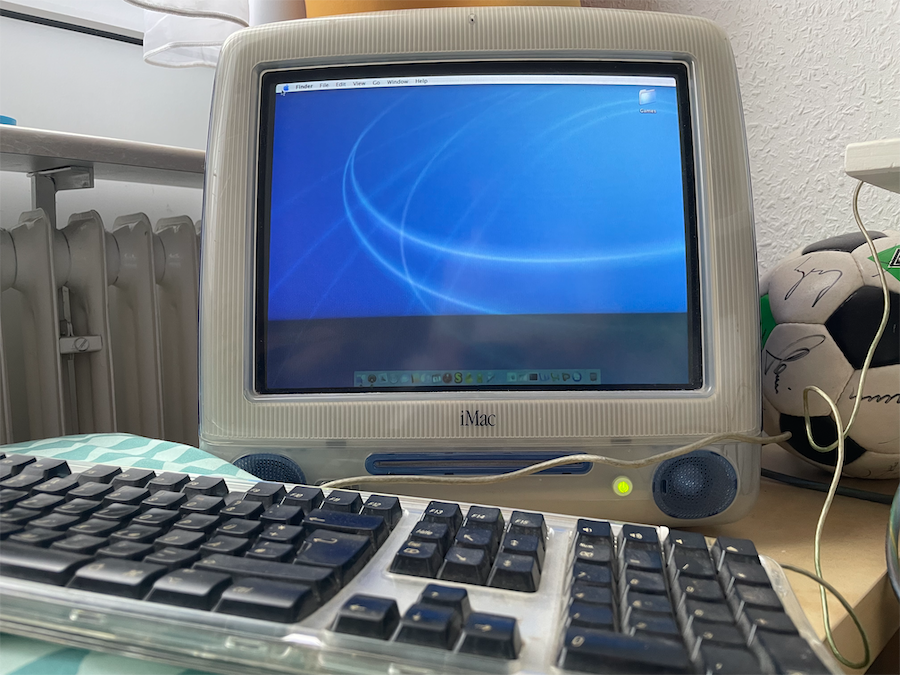
LATE 2009
Apple Mac mini
Late 2009 · Intel Mac · The platform switch
The turning point.
In late 2009, I made the move to the Mac as my primary computing platform.
The Mac mini was compact, quiet, and a surprisingly capable desktop. More importantly, it marked a change in how I approached computing.
After years of building and upgrading PCs, the Mac became my main everyday environment.
I eventually sold this particular machine.
Interestingly, I now own a different Mac mini from early 2009, running Mac OS X Snow Leopard. Computing history has a habit of coming full circle.
c. 2013
MacBook Pro Retina 15-inch
Mid 2012 model · Intel Core i7 · Retina display
My first Retina MacBook Pro.
I bought it second-hand from a freelancer, probably around 2013. With its 15-inch Retina display, quad-core Intel processor, and SSD, it represented a substantial leap from earlier notebook generations.
The machine is still around, somewhere in the basement.
It's one of those devices I never quite managed to part with — and perhaps that's just as well.
c. 2018
MacBook Pro 13-inch
Touch Bar · Intel Mac
The Touch Bar years.
By this point, MacBooks had become established parts of my everyday computing life.
The 13-inch MacBook Pro with Touch Bar represented Apple's vision of a more streamlined, integrated notebook experience — very different from the expandable desktop PCs I'd built years earlier.
I eventually sold it on eBay in 2025.
Some machines leave without much ceremony.
04 — THE MULTI-SYSTEM YEARS
2022–2025
MacBook Pro 15-inch, 2015
Intel Mac · Today: Windows 11
An Apple notebook with an unexpected second life.
My 2015 MacBook Pro is still in use, but no longer as a Mac.
These days, it runs Windows 11.
There's something rather satisfying about taking a well-built computer, ignoring its original platform boundaries, and finding another use for it years later.
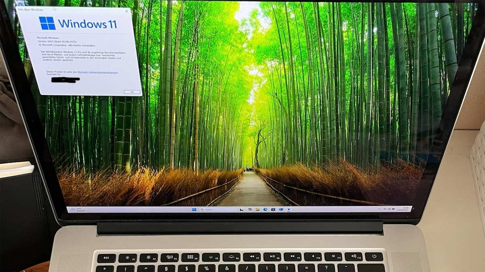
2022–2025
MacBook Pro 15-inch, 2019
Intel Mac · macOS Sequoia
The other side of my current notebook setup.
Unlike its older sibling, the 2019 MacBook Pro remains firmly in the Apple ecosystem, running macOS Sequoia.
Together, these two MacBooks illustrate how my approach to computing has changed: the operating system is no longer necessarily determined by the logo on the lid.
2022–PRESENT
The Battlestation
Intel Core i7-9700 · NVIDIA RTX 3070 · Windows 11
Back to a proper Windows desktop.
I bought this system from my friend Martin, bringing a powerful gaming PC back into my setup after many years of primarily using Macs.
With its Core i7-9700 and GeForce RTX 3070, the Battlestation handles modern games and everything else I throw at it.
It's also a return to something familiar: a Windows PC that can be maintained, modified, and upgraded as needed.
Some things never really change.
Head over to the GAMING section to see current digital explorations.
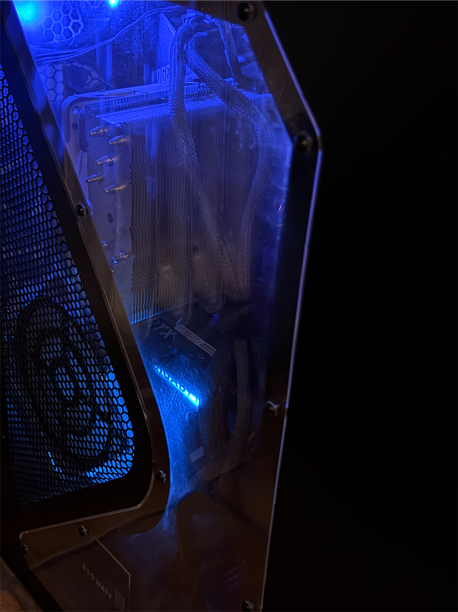
2022–2025
The Acer Desktop
Windows 11 · Upgraded RAM and graphics
Another family computer with a history.
Originally belonging to my brother, this older Acer eventually found its way into my hands.
Rather than replacing it, I upgraded the memory and graphics card, installed Windows 11, and passed it on to my wife.
Not particularly glamorous, perhaps, but a good example of what I appreciate about older hardware: usefulness doesn't necessarily end when the original owner moves on.
2026
The Next Generation
MacBook Neo · HP Pavilion 570
By 2026, the computing story was no longer just about my own machines.
My daughter received a MacBook Neo, while my son got the HP Pavilion 570 — another existing desktop given a new purpose.
Different generations of hardware, different users, different needs.
And another reminder that computers often have more than one life.
05 — PARALLEL LIVES
MID-2000s
Macintosh Performa
System 7 · QuarkXPress 3.22 · Photoshop 4 · Suitcase
One of the more extraordinary entries in this timeline.
In the mid-2000s, I worked on desktop publishing for a weekly newspaper in Wülfrath.
The workstation was an ageing Macintosh Performa, still running classic Mac OS System 7.
The production environment included QuarkXPress 3.22, Adobe Photoshop 4, and Suitcase for font management.
Finished production data was transferred over ISDN.
By contemporary standards, the whole setup was already thoroughly outdated. But it was a working publishing environment, doing real production work.
A wonderful reminder that professional technology doesn't always follow the upgrade cycles of the consumer market.
THE 2010s–2020s
Machines in Orbit
Some computers stayed with me because they were useful. Others because they were interesting.
iBook G4, 1.42 GHz. A surviving PowerPC notebook, running Mac OS X Tiger with the Classic environment. A small window into the years when Apple was transitioning away from its original Mac OS architecture.
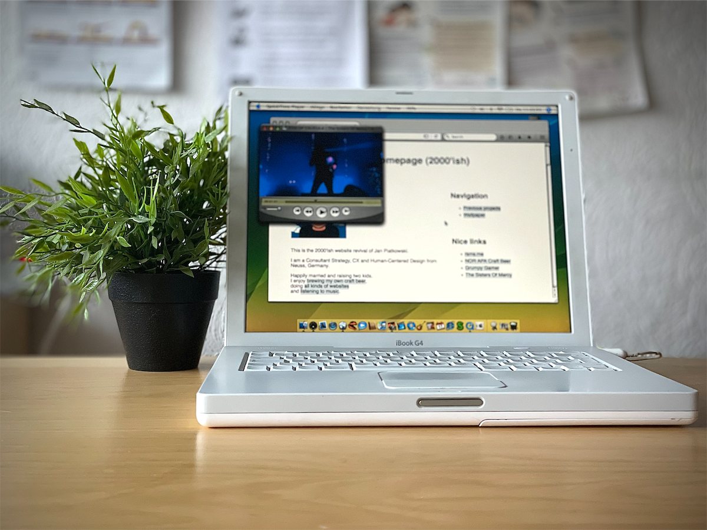
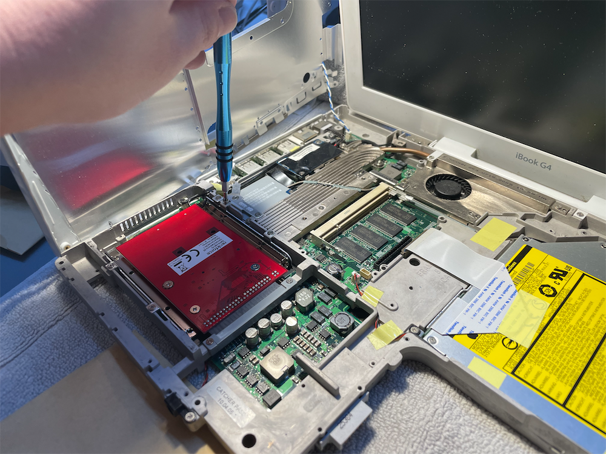
Mac mini, Early 2009. A different machine from my original Late 2009 Mac mini, now running Mac OS X 10.6.8 Snow Leopard.
Compaq Mini 311. An old netbook from my father-in-law, now running Windows 7 and enjoying another life as a retro gaming machine.
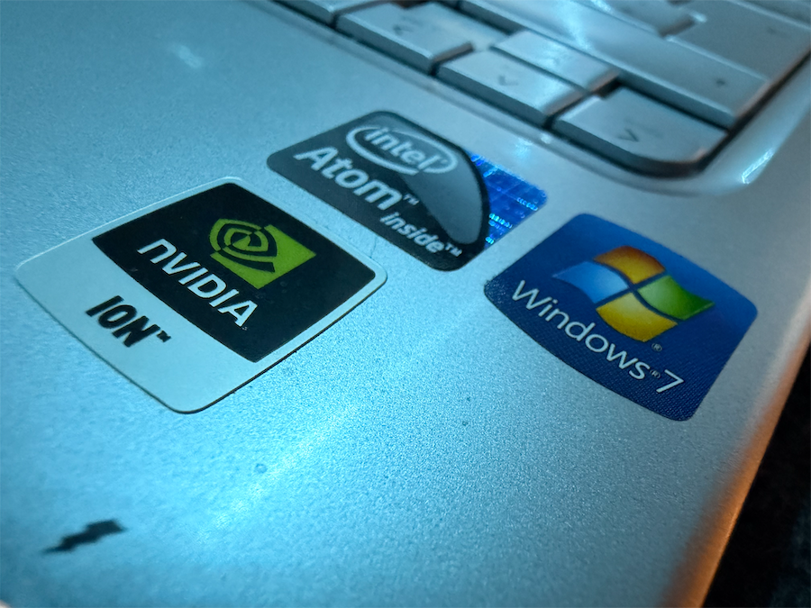
MacBook Pro 13-inch, 2016. Another Intel Mac repurposed to run Windows 11.
Lenovo touchscreen notebook, circa 2012. A machine suited to revisiting the Windows 8 era, when Microsoft was rethinking the PC interface around touch.
Lenovo ThinkPad T540p. A former business laptop running Windows 11 as a host for Home Assistant OS. Once a portable workstation, now part of the household infrastructure.
None of these machines needs to be particularly fast or modern to be interesting.
Their value lies in what they can still do — and in the different periods of computing history they preserve.
06 — LOST DEVICES
c. 2004
The Acer Notebook
An Acer notebook from the mid-2000s.
The precise model and configuration have disappeared from memory, but the machine belongs to a period when portable PCs were becoming increasingly important to my everyday computing life.
Another piece of hardware history waiting for a photograph, a receipt, or a forgotten specification to turn up.
THE VISTA YEARS
The trafema.de Notebook
A notebook associated with my trafema.de days, running Windows Vista.
I no longer remember the exact model, but the machine deserves its place in the story.
Sometimes the project or website associated with a computer remains more memorable than the hardware itself.
c. 2012
The denkwerk PC
A former denkwerk computer that had been retired from professional use.
Around 2012, I repurposed it for my parents, still running Windows Vista.
Another machine that found a second home instead of immediately becoming electronic waste.
Its precise specifications, and ultimately its whereabouts, are now lost to time.
THE ONE I WISH I'D KEPT
The Chieftec Dragon
SYSTEM NOT FOUND
Of all the missing computers, my Core 2 Duo system inside the Chieftec Dragon CS-601 might be the one I regret losing most.
Not because it was especially rare or valuable, but because it represented a very specific moment in my personal PC history.
The combination of an ASRock 4CoreDual-VSTA, Windows Vista, and that distinctive Chieftec tower captured an era of transitional hardware, changing interfaces, and the pleasure of building a computer yourself.
Today, it would make a rather wonderful period-correct retro PC.
Unfortunately, mine is gone.
07 — STILL RUNNING
Looking back over more than three decades, the most interesting part isn't how much faster computers have become.
It's how their roles have changed.
The Amiga was an introduction to an entirely new world. The 386 taught me the PC. The Pentium II brought me onto the internet. The Athlon introduced me to building computers. The Mac mini marked a major platform change.
And today?
A 2015 MacBook Pro runs Windows 11. A business ThinkPad runs my home automation setup. A Windows gaming PC shares the desk with Macs. Old hardware gets rescued, repaired, and reused.
The machines have changed. The curiosity hasn't.
Some machines are still running. Some are gathering dust. And a few I wish I'd never thrown away.
To be continued.
TO BE CONTINUED_